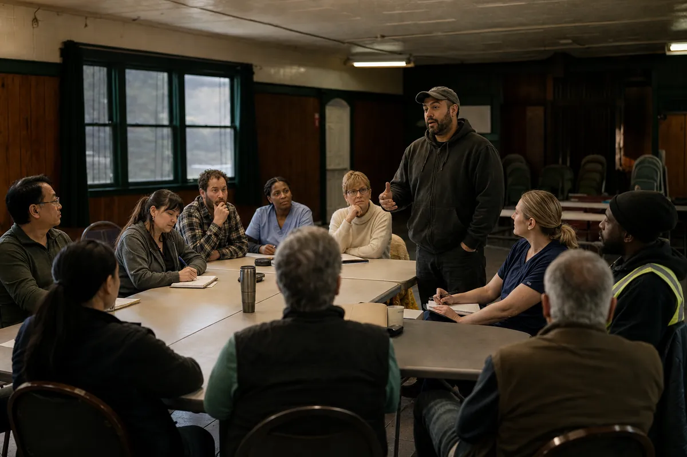

Reach more workers
Make it easier for people to find union information and discover relevant connections.
For unions & organizers
Hallworks is being built to help unions connect with workers, share information, and make it easier for members to take part.
Register your interest
A platform in progress
We’re listening to unions and organizers as we shape the product. These are the areas we’re interested in exploring.
Make it easier for people to find union information and discover relevant connections.
Create a more connected place for union members to find information and participate.
Explore tools that help organizers and members stay connected around shared work.
For union leaders
Hallworks is early. We welcome conversations with unions interested in sharing their needs and perspectives.